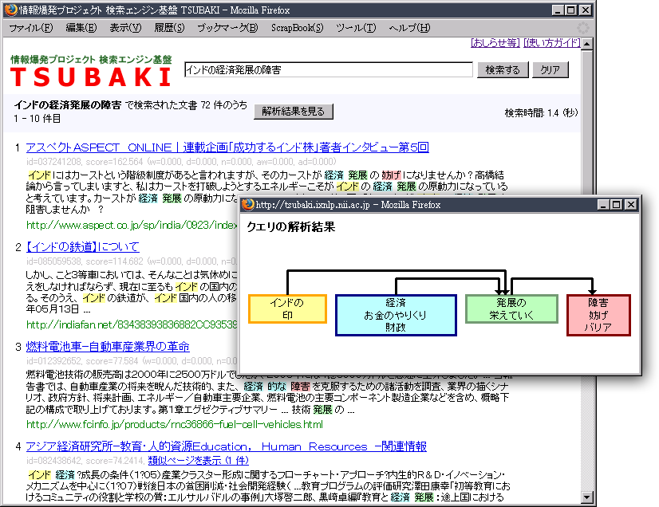

TSUBAKI：表現の違いを気にせずに自然文で検索する
TSUBAKIでは自然
文で検索することができます。
検索には、語と語の修飾関係や、同義語、表記の揺れが考慮されます。
例えば「インドの経済発展の障害」で検索した場合、「インド」と「経済」の
修飾関係や、「障害」と「妨げ」の同義関係が考慮されます。
これにより、「インド経済の発展の妨げ」と書かれているページでも検
索することが可能です。(下図を参照)
注意：2007年5月から7月にかけて収集した日本語ウェ
ブページが検索対象であるため、最新の話題は検索できません。

「インドの経済発展の障害」のほかにも語と語の修飾関係や、同義語、表記揺れの処理がうまく働く例を幾つか示します。
乳児のむし歯を予防するには
朝食を食べない子供の増加
かぜ薬を服用するときの留意点
©2006 - 2008 黒橋研究室